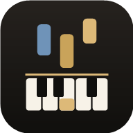

Estás tocando
—
Tocá una tecla
En partitura
Qué aprendés
Racha
0
Precisión
—
Notas
0/0
Compases 1–4

PianoFlowComo en una clase: primero calentás, después avanzás con tu lección y al final repasás algo viejo para que no se olvide.
★ la terminaste en Aprender. ★★ con ritmo y las dos manos, al 75%. ★★★ con ritmo y las dos manos, al 90% y a velocidad normal.
Buscá un arreglo en MuseScore, descargalo como MusicXML (trae la digitación) o MIDI y arrastralo a esta ventana. En el celular: desde Descargas, Compartir → PianoFlow. Elegí arreglos que digan easy o piano solo.
Espacio empezar/pausar · Enter reiniciar · ←→ compás anterior/siguiente · ↑↓ velocidad · 123 modo · Esc cerrar